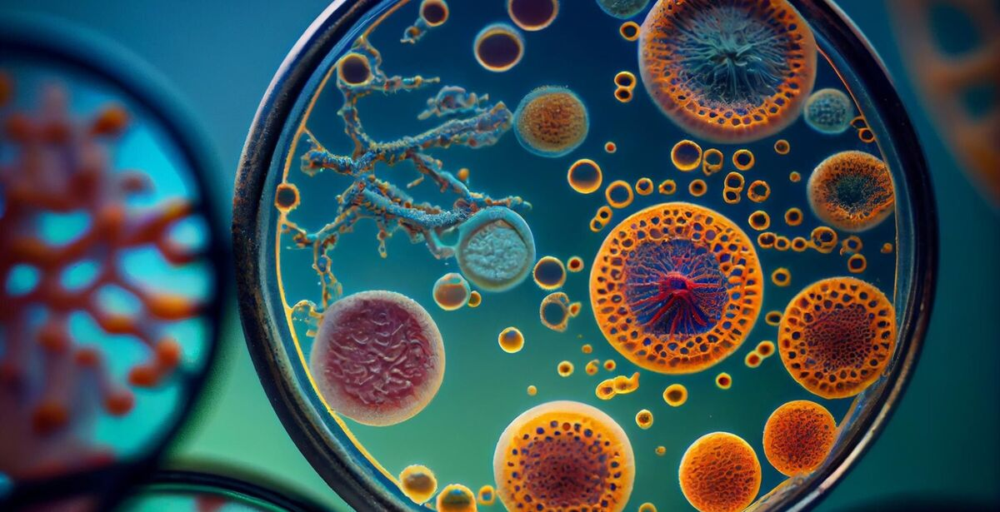

Удивительный мир микробиологии: невидимая вселенная вокруг нас
Микроорганизмы — самые крошечные, но при этом самые многочисленные обитатели нашей планеты. Они невидимы невооружённым глазом, но их влияние на жизнь Земли колоссально. Микробиология — наука, изучающая бактерии, вирусы, грибы и простейших — открывает перед нами удивительные тайны природы, медицины, экологии и даже космоса.

Кто такие микроорганизмы?
Микроорганизмы (микробы) — это живые существа, видимые только под микроскопом. Их делят на несколько групп:
- Бактерии – одноклеточные организмы без ядра (прокариоты). Они могут быть полезными (лактобактерии в кишечнике) и патогенными (возбудители болезней).
- Археи – похожи на бактерий, но имеют уникальную биохимию и живут в экстремальных условиях (термальные источники, солёные озёра).
- Вирусы – неклеточные формы жизни, которые размножаются только внутри клеток хозяина.
- Микроскопические грибы (например, дрожжи и плесень) – важны для пищевой промышленности и медицины.
- Простейшие (амебы, инфузории) – одноклеточные эукариоты, некоторые из которых вызывают болезни (малярия).
Где живут микробы?
Они окружают нас повсюду:
- В организме человека – на коже, в кишечнике (микробиом), во рту.
- В почве и воде – участвуют в круговороте веществ, разлагают органику.
- В экстремальных условиях – горячие гейзеры, ледники, глубины океана.
- Даже в космосе! Некоторые бактерии выживают в условиях радиации и вакуума.
Роль микробов в природе и жизни человека
1. Польза микробов
- Пищевая промышленность: сыр, йогурт, квашеная капуста создаются благодаря бактериям и грибам.
- Медицина: антибиотики (пенициллин), вакцины, пробиотики.
- Экология: очистка сточных вод, биоремедиация (утилизация нефтяных разливов).
- Сельское хозяйство: бактерии помогают растениям усваивать азот.
2. Опасные микробы
Некоторые бактерии и вирусы вызывают болезни (туберкулёз, грипп, COVID-19). Однако лишь малая часть микроорганизмов вредна для человека.
Современные открытия в микробиологии
- Микробиом человека – учёные обнаружили, что баланс бактерий влияет на иммунитет, психику и даже вес.
- Криптобактерии – микроорганизмы, которые десятилетиями не удавалось вырастить в лаборатории.
- Бактерии, питающиеся пластиком – возможное решение проблемы загрязнения планеты.
- Биоплёнки – сложные сообщества бактерий, устойчивые к антибиотикам (актуально для медицины).
Заключение
Мир микробиологии — это удивительная вселенная, скрытая от наших глаз. Без микроорганизмов жизнь на Земле была бы невозможна: они поддерживают экосистемы, помогают в медицине и пищевой промышленности. Изучая микробов, учёные открывают новые пути для решения глобальных проблем человечества.
Микроорганизмы – маленькие, но великие!